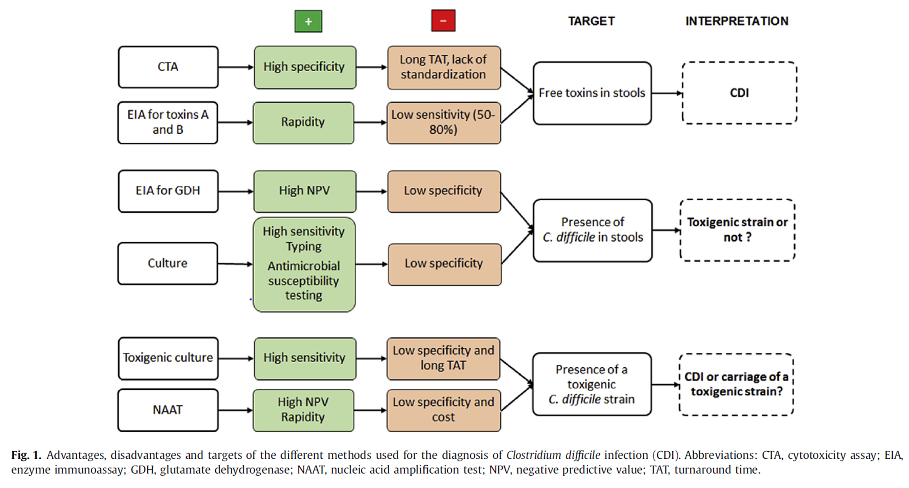
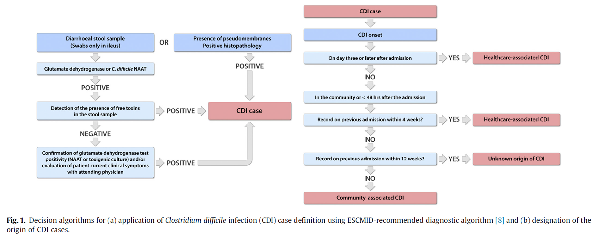
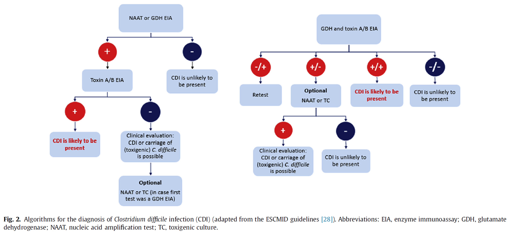
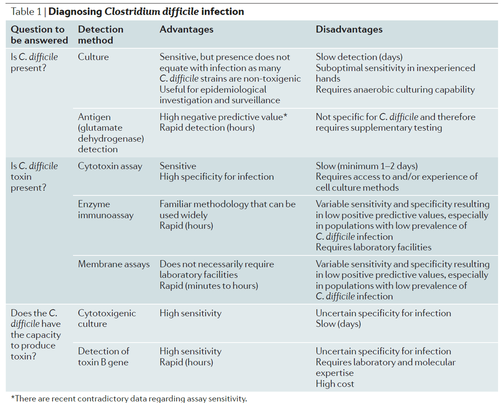

5 Diagnostic Techniques and Challenges
Diagnostic Complexity: CDI diagnosis is complex due to the need to distinguish between non-toxigenic and toxigenic strains. Two primary reference tests exist:
Cytotoxigenic Culture: Detects toxigenic C. difficile, indicating infection risk but not always symptomatic disease.
Cell Cytotoxicity Assay (CTA): Detects toxins A and B in stool samples, closely associated with clinical symptoms.
Screening Techniques:
Enzyme Immunoassays (EIAs): Commonly used but can lack sensitivity and specificity, especially as single tests.
Glutamate Dehydrogenase (GDH) and Nucleic Acid Amplification Tests (NAAT): GDH tests are sensitive but cannot differentiate toxigenic from non-toxigenic strains. NAAT detects toxin genes with high sensitivity but may overdiagnose CDI.
Two-Step Algorithms: Combining initial sensitive screening (e.g., GDH or NAAT) with confirmatory toxin testing is recommended to improve diagnostic accuracy, reduce false positives, and ensure symptomatic cases receive treatment.
Only toxigenic strains of C. difficile, which produce toxin A and/or toxin B, are considered pathogenic and capable of causing clinical infection. According to the European Society of Clinical Microbiology and Infectious Diseases (ESCMID) guidelines, a diagnosis of CDI (Clostridioides difficile infection) is established if:
The patient presents a clinical picture that aligns with CDI symptoms, with laboratory evidence of toxin A and/or toxin B in stool samples and no other identified cause of diarrhea.
Alternatively, the presence of pseudomembranous colitis (PMC) alone, a severe form of inflammation in the colon, is also a definitive indicator of CDI
Similarly, the Society for Healthcare Epidemiology of America and the Infectious Diseases Society of America (SHEA/IDSA) define a CDI case based on:
Symptoms consistent with CDI, often diarrhoea, alongside a positive stool test for C. difficile toxins or toxigenic strains.
Confirmatory findings of PMC through colonoscopy or histopathology can also establish a CDI diagnosis
Both definitions emphasize the critical role of toxin presence and clinical symptoms in diagnosing CDI, as only toxigenic strains are capable of causing infection.
There are several diagnostic tests for Clostridioides difficile infection (CDI), each targeting different aspects of the bacterium or its toxins

5.1 Molecular Tests
- Nucleic Acid Amplification Tests (NAATs): These include PCR-based tests that detect genes responsible for toxin production (e.g., tcdA or tcdB genes). NAATs are highly sensitive and provide rapid results but can sometimes detect colonization without active infection, potentially leading to overtreatment.
5.2 Toxin Detection Tests
Enzyme Immunoassays (EIAs): These detect toxins A and/or B directly in stool samples. While fast and cost-effective, EIAs have variable sensitivity, which can lead to false negatives.
Cytotoxicity Cell Assay (CTAs): This test identifies toxin B activity by observing the cytotoxic effects on cultured cells, which is then neutralized with antitoxin. This test is considered a gold standard in terms of specificity but is time-consuming and requires specialized laboratory facilities.
Gold Standard: CTA is considered the reference method for detecting free toxins, mainly toxin B, in stool samples.
Procedure:
A filtrate of stool is applied to a cell culture, where the presence of toxins causes a specific cytopathic effect, notably cell rounding.
This effect is observed after 1 to 2 days of incubation at 36 ± 1°C.
Specificity is verified by neutralizing the effect with antisera against C. difficile toxin B or Clostridium sordellii toxins.
Advantages:
Proven sensitivity and specificity, as CTA results correlate better with clinical outcomes than simply detecting toxigenic C. difficile strains.
Lower cost compared to some other tests.
Limitations:
CTA is used by only a few laboratories due to a lack of standardization (e.g., choice of cell line, sample dilution, incubation time).
Has a long turnaround time, limiting its practicality for routine diagnosis.
5.3 Antigen Detection Tests
- Glutamate Dehydrogenase (GDH) Test: GDH is an enzyme produced by C. difficile, and its presence in stool suggests colonization. While the GDH test is sensitive, it cannot differentiate between toxigenic and non-toxigenic strains, so it is often used as a preliminary screen.
Glutamate dehydrogenase is a metabolic enzyme expressed by all C. difficile strains. It can be detected by immuno-enzymatic (ELISA) or immuno-chromatographic assays.
- GDH as a Marker:
Glutamate dehydrogenase (GDH) is a metabolic enzyme present in all C. difficile strains.
GDH can be detected using immuno-enzymatic (ELISA) or immuno-chromatographic assays.
- Screening Utility:
A positive GDH test indicates the presence of C. difficile but does not confirm whether the strain produces toxins (toxigenic potential).
GDH tests are widely recommended as a screening method for CDI due to their high negative predictive value (NPV).
- Negative Predictive Value (NPV):
The high NPV of the GDH test (80-100%) means a negative result generally rules out CDI, making it a useful initial screening tool.
However, NPV can be influenced by the prevalence of CDI in the population:
- For example, with an NPV of 99% and a CDI prevalence of 10%, there is a risk that one out of every ten positive stool samples could be missed if only GDH screening is used.
- Confirmation of Positive Results:
- A positive GDH result requires confirmation with a second, more specific test, such as a toxin test, to verify the presence of toxigenic C. difficile. This second step ensures diagnostic accuracy by detecting the actual toxin production.
Enzyme Immunoassay (EIA)
Mechanism: EIA detects both toxins A and B using monoclonal or polyclonal antibodies. This test can be formatted in either micro-well (ELISA) or lateral flow membrane devices.
Commercial Availability: Numerous commercial EIA kits are available, designed to provide rapid, easy-to-interpret results.
Advantages:
- Rapid results and ease of use make EIA a convenient option for initial testing.
Limitations:
- Many studies have noted EIA’s lower sensitivity (ranging from 29% to 86%) compared to CTA, making it unsuitable as a stand-alone diagnostic for CDI.
Available Tests: Commercial tests like C. difficile Quik Chek Complete (TechLab, Alere), CERTEST Clostridium difficile GDH + toxin A + B (Theradiag), and C. difficile GDH-toxins A-B (MonlabTest, Orgentec) can simultaneously detect both GDH and toxins A and B.
Diagnosis Based on Results:
Negative for Both GDH and Toxins: CDI can be reliably excluded if results are negative for both GDH and toxins.
Positive for Both GDH and Toxins: Patients with both positive GDH and toxin results are classified as having CDI.
Inconclusive Results:
GDH-Negative and Toxin-Positive: This combination is rare, and samples should be retested to confirm results.
GDH-Positive and Toxin-Negative: For these samples, the European Society of Clinical Microbiology and Infectious Diseases (ESCMID) suggests an optional Nucleic Acid Amplification Test (NAAT) to confirm the presence of a toxigenic C. difficile strain.
5.4 Two-Step and Multi-Step Algorithms
- Two-Step Algorithm: Combines the GDH test (for initial screening) and a toxin test (such as EIA or NAAT) to improve diagnostic accuracy. Positive GDH tests are confirmed by a second test to identify toxin production.
- Glutamate Dehydrogenase (GDH) EIA: Detects the GDH enzyme, a marker of C. difficile presence in stool. GDH is highly sensitive but not specific for toxin-producing strains, so it is often paired with toxin assays for confirmation.
- Three-Step Algorithm: Some laboratories use a three-step algorithm where GDH-positive, toxin-negative samples are confirmed with NAAT to reduce false positives from colonization.
5.5 Culture-Based Tests
Anaerobic Stool Culture: This method involves culturing C. difficile under anaerobic conditions, followed by testing for toxin production. While highly sensitive, culture tests are labour-intensive and slow, making them more useful for research and epidemiology than routine diagnosis.
Cytotoxigenic Culture (TC): This combines stool culture with subsequent toxin testing to confirm toxigenic strains specifically. It is highly sensitive but time-consuming and complex.
TC involves first isolating C. difficile strains on selective media and then testing them in vitro for toxin production.
Selective Media for Isolation:
Commonly used selective media are based on cycloserine cefoxitin fructose agar (CCFA), initially described by George et al.
Additives like sodium taurocholate or lysozyme may be added to encourage spore germination and improve recovery rates.
Chromogenic Media:
- Newer chromogenic media offer sensitivity comparable to other selective media, allowing for identification within 24 hours of incubation.
Incubation Conditions:
- Plates are incubated in an anaerobic environment for 48 hours at 36°C (±1°C).
Strain Identification:
Various methods are available for identifying isolated strains:
Gallery strips for biochemical profiling
Gas-liquid chromatography
Latex agglutination to detect GDH enzyme
MALDI-TOF mass spectrometry for rapid identification
Toxin Production Testing:
- Once isolated, the strain’s pathogenic potential is assessed by testing for toxin production. This can be done either from a suspension of colonies or the supernatant from bacterial growth.
5.6 Emerging and Experimental Tests
Loop-Mediated Isothermal Amplification (LAMP): A rapid molecular test with high sensitivity and specificity, similar to PCR, but does not require complex thermal cycling.
Mass Spectrometry: Techniques like MALDI-TOF (Matrix-Assisted Laser Desorption/Ionization-Time of Flight) are being explored for rapid pathogen identification directly from stool samples.
CRISPR-based Detection: Experimental CRISPR-based tests are being developed for highly specific and rapid detection of toxin genes in C. difficile.
5.7 Reference Standards:
CTA and TC are considered the gold standards for detecting free toxins and toxigenic strains, respectively. However, both tests are rarely used in routine practice due to technical challenges and long processing times (TC due to a 2-5 day turnaround), making faster but less sensitive methods like EIA and NAAT more commonly implemented. TC is essential for subsequent strain typing, molecular analysis, and antimicrobial susceptibility testing to inform treatment and epidemiological studies.
The ESCMID guidelines do not recommend using NAAT as a stand-alone test for C. difficile diagnosis but rather to use NAAT as a screening test given its high NPV for CDI.
Most international guidelines agree that Enzyme Immunoassay (EIA) for toxins alone is insufficient for diagnosing CDI and should not be used as a standalone test. The presence of a toxigenic strain without detectable free toxins (toxin-negative, NAAT-positive) in stool raises challenges in clinical interpretation, as not all toxin-negative cases reflect active disease
Study Findings on Diagnostic Correlation with Clinical Outcomes:
In a large UK observational study of over 12,000 patients with diarrhea, those with a positive Cytotoxicity Assay (CTA), indicating free toxin presence, had higher mortality rates and blood leukocyte counts compared to those who were negative for C. difficile.
Toxigenic strain presence without free toxins (TC-positive, CTA-negative) showed no association with increased mortality or clinical complications, indicating that toxin presence in stool correlates more directly with severe CDI outcomes.
A similar US study found that patients positive for both NAAT and toxin experienced more complications, higher fecal lactoferrin levels, and higher blood leukocyte counts than NAAT-positive, toxin-negative patients. This reinforces that toxin presence, rather than just the toxigenic strain, best indicates active CDI.
Implications for Asymptomatic Carriers:
Patients who test positive for a toxigenic strain (TC-positive) but negative for free toxin (CTA-negative) are often classified as potential carriers. While some guidelines recommend isolating these patients to prevent transmission, decisions should be case-specific.
Although a negative stool toxin test generally suggests no CDI, some studies show that around 11% of patients with toxigenic C. difficile but no detectable stool toxin still develop pseudomembranes, a hallmark of CDI, during endoscopic exams. This suggests that toxin tests alone may miss certain CDI cases.


